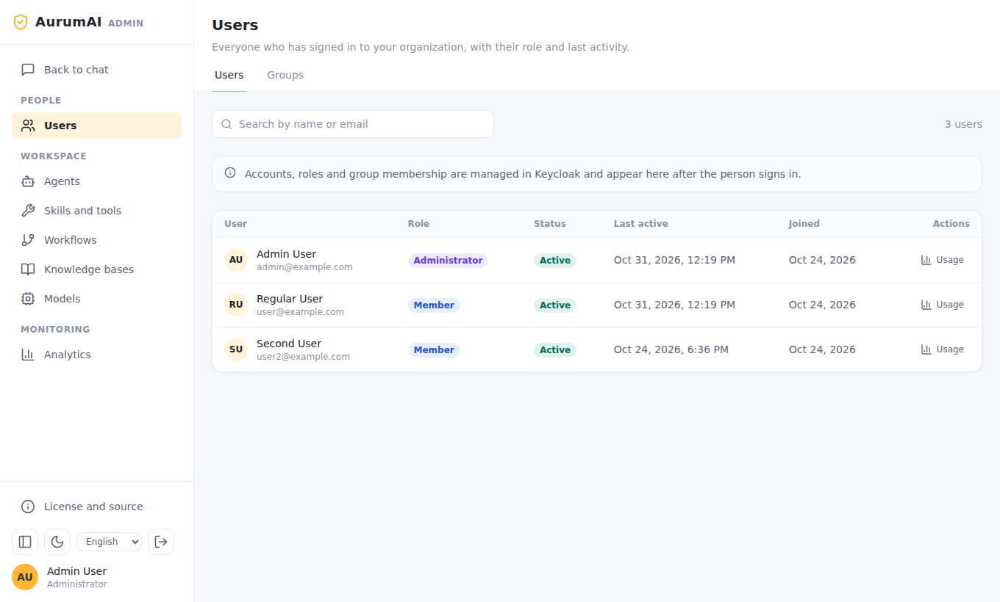
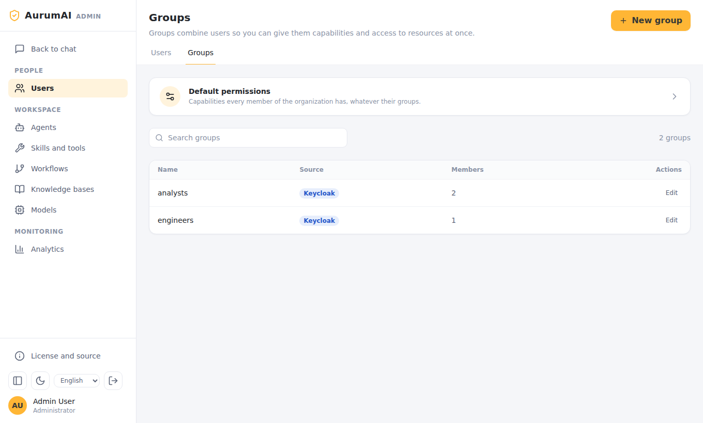
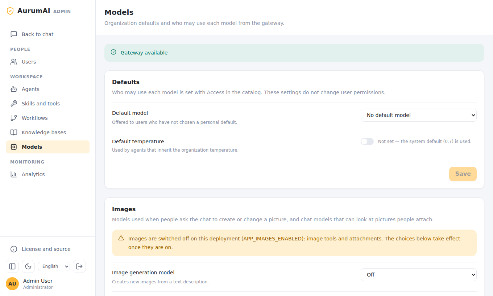
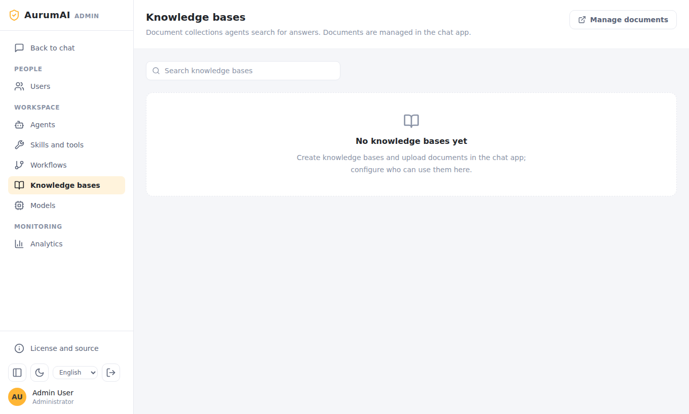
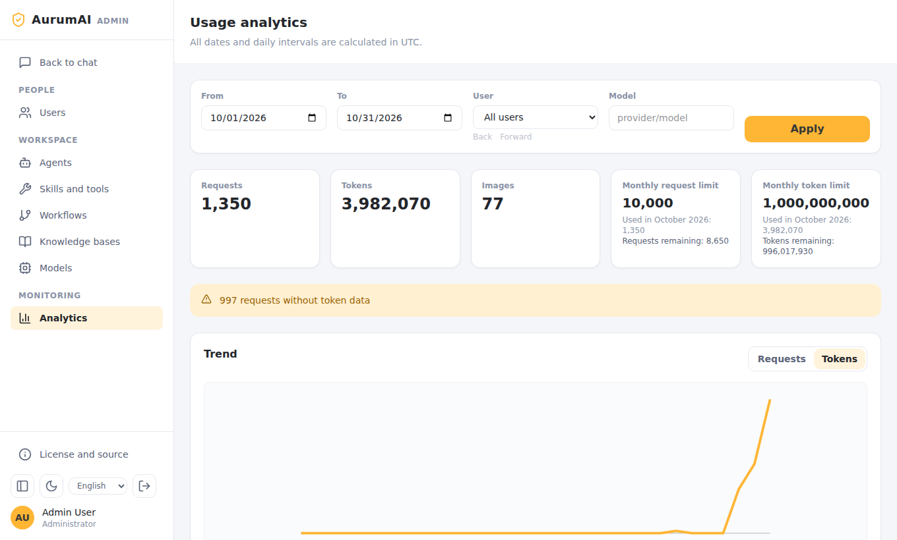

Administrator guide
This guide is for people who run an AurumAI organization day to day: who may do what, which models and agents people get, and how to watch usage. Installing the platform is covered in Installation and deployment; running it in production in Operations.
The Admin app
Open the admin address (http://localhost:3100 locally) and sign in with an account
that has the org_admin role in Keycloak. People without it cannot enter. The sidebar
has three groups:
- People: Users, Groups
- Workspace: Agents, Skills and tools, Workflows, Knowledge bases, Models
- Monitoring: Analytics

Roles, accounts and group membership live in Keycloak
(http://localhost:8080 locally). The Admin app shows them after a person signs in
but does not edit them. Membership is synchronised from the groups claim on every
sign-in, so change it in Keycloak.
How access works
Access is default-deny and has two layers.
-
Capabilities say what a person may do:
Capability Allows chat.sendStart and continue conversations (the only default for a new organization) workspace.agents.createCreate agents workspace.knowledge.createCreate knowledge bases and upload documents workspace.skills.createAdd skills sharing.manageGrant others access to resources (also needs the administrator role) web.accessUse web search and read images.generateCreate and edit images agents.hermesUse Hermes Agent admin.users.read,admin.users.writeView and manage users -
Resource grants say which models, skills, knowledge bases, agents and workflows a person or group may use. Without a grant the resource is invisible to them.
Both layers are evaluated live: a change applies to the next request, including turns already running.
Groups and default permissions

Users → Groups lists groups synchronised from Keycloak. Open Default permissions to set capabilities every member has, whatever their groups. Open a group to give its members more on top of those defaults. Turn a capability on only when you want everyone it covers to be able to add something other members then see (an agent, a skill, a knowledge base).
Before you save a change, the preview shows the effective result for a user or group.
Resource access
Each agent, skill, workflow, knowledge base and model has an Access action. Grant it to users or groups there. Granting a model or skill to a group is how you decide what a team can use; the person still needs the capability for the action itself.
New organizations are provisioned on the first login with the default capability and grants for the global skills and models. For existing organizations preview and apply provisioning from the backend container:
docker compose exec backend python -m src.cli.provision_org --all # preview
docker compose exec backend python -m src.cli.provision_org --all --apply
Models

Models lists what the gateway publishes. The status bar says whether the gateway is reachable.
- Defaults. The default model offered to users who have not chosen one, and the default temperature for agents that inherit the organization's value (unset means the system default, 0.7).
- Access. Who may use each model, set in the catalog (see Resource access). The defaults above do not change permissions.
- Images. The image generation and image editing models (separate settings; either
may be off), and which chat models accept pictures ("Models that accept images").
People also need
images.generate, and the operator must have setIMAGES_ENABLED; the page warns when the switch is off. - Hermes Agent. The model Hermes runs on and its internet access mode. See Hermes Agent: administration.
Agents
Agents are assistants with a model, instructions, allowed skills and knowledge
bases, offered to users in chat. Create, edit and delete them here; people with
workspace.agents.create can create their own. An agent works only with the skills
and knowledge bases it has been granted, and a person using it must be granted the
agent itself.
Agent kinds include ordinary agents and, when Hermes Agent is on, an agent that runs on Hermes (usable as a workflow node, marked with a Hermes Agent badge).
Skills and tools
Skills and tools are what agents and chat can call:
- MCP servers: tools over an SSE endpoint (use discover tools when adding one). Tenant MCP uses SSE only.
- Code skills: an uploaded bundle that runs in an isolated sandbox over several
rounds. They need the
skills-execprofile on the deployment. - Tool and Agent entries.
Use Access to grant each to people or groups. The page also lists skills Hermes Agent wrote (see Reviewing skills Hermes wrote).
./install-platform.sh --apply installs four starter tools; see
starter tools.
Workflows
Workflows describe multi-step processes: agents on connected nodes, with branches, parallel steps, human approval and bounded loops. An editor guides you through five steps, with runnable Examples, Saved templates and Run diagnostics tabs. The full walkthrough, with three complete examples, is in the workflow guide. Workflows are versioned; a running turn keeps the version it started with. People run workflows from the workflow picker in chat, so grant them access to each one.
Knowledge bases
Documents are uploaded and managed in the chat app (users with
workspace.knowledge.create). The Admin app's Knowledge bases page decides who
can use each one.

Usage and quotas

Analytics shows requests, tokens and images for a date range (UTC), filtered by user or model, with a daily trend. The cards show the organization's monthly request and token limits, how much is used in the current month and what remains. Defaults are 10 000 requests and 1 000 000 000 tokens per UTC calendar month. When either runs out, new requests are refused until the month changes. Requests whose provider reported no token data are counted separately and flagged on the page.
Per user, Users → Usage opens the same report for one person. Image calls count
against the quota too. In addition each user is rate-limited
(APP_RATE_LIMIT_PER_MINUTE, 300; APP_RATE_LIMIT_PER_MINUTE_STREAM, 30).
A first-day checklist
- Sign in to the Admin app. Check Models shows Gateway available.
- Choose a default model and decide which groups may use which models.
- In Groups → Default permissions keep
chat.sendand add only what everyone should have. - Create the first agents; grant them to the people who should see them.
- Add skills or knowledge bases as needed and grant access.
- Turn on optional features in the deployment and grant their capabilities to the right groups: web, images, Hermes Agent.
- Watch Analytics during the first week.